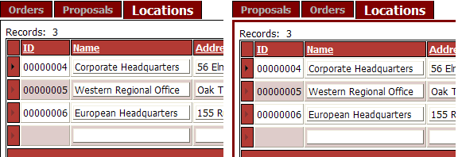

Editing a Tabbed GridLinker Template
The Tabbed GridLinker template defines how any parent and child grid will be displayed. You may modify:
the content and relative positions of the grid components
the formatting of the tables that contain parent and child grids
other constant HTML content that you want to appear above, below, between, and to the sides of the grids
To edit the template used by a tabbed GridLinker:
In the Tabbed GridLinker Builder, select any grid that has a child grid.
Check the Grid Properties > Customize page layout field.
Click
 in the Grid Properties > Page layout
template field to display the Tabbed Grid Layout
dialog.
in the Grid Properties > Page layout
template field to display the Tabbed Grid Layout
dialog.You may edit the template in either the HTML Editor or in this dialog box.
To edit the template in the HTML Editor, click Edit in HTML Editor.
The resulting WYSIWYG and Source tabs allows you to modify and insert and format other HTML content. For example, the default formatting places a single black line one pixel wide around each child grid. Here is an example that changes the thickness and color of the line around the child table.
Repeat steps 1 through 4 for each parent grid that has a child grid.
|
'original formatting <td style="BORDER-RIGHT: black 1px solid; BORDER-TOP: black 1px solid; BORDER-LEFT: black 1px solid; BORDER-BOTTOM: black 1px solid" > 'modified formatting <td style="BORDER-RIGHT: #800000 3px solid; BORDER-TOP: #800000 3px solid; BORDER-LEFT: #800000 3px solid; BORDER-BOTTOM: #800000 3px solid" > |
The picture below shows before (on the left) and after (on the right).

See Also
Creating Tabbed GridLinker Components
Limitations
Web publishing applications only.